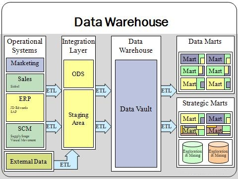

Cloud Computing
Accounting Architecture

The Services block of the Architecture is the final block in the Technology leg. It comprises networking and cloud computing. In a nutshell, Services relies on the same technologies as the Hardware, Software, and Storage blocks, but Services uses these in a remote, and not a local, environment.
Familiarity
Because of the prevalence of digital devices, most students already rely on many of the technologies previously discussed throughout this course. With our connected lifestyle, this is especially true of network technologies. As a result, much of this discussion is an explanation of technologies, with which we are all already familiar, even if the technical terms are not.
A Brief History
Historically, individual computers were thin clients—dumb terminals—that allowed for use of server-side software on a centralized server. Server hardware was large and expensive, and in order to use that hardware efficiently, multiple dumb terminals shared the computing power. As processing power became less expensive, manufacturers created personal computers—fat clients or smart terminals—that could function independently using client-side software. To some extent, desktop and laptop computers continue to follow this model.
Going Online
With the advent of the Internet and the sharp reduction in data transmission cost, we have now returned to the original model of servers and thin clients, but we have added an additional concept. Applying terminology of today to the original server-client relationship, these dumb terminals communicated with their server using a local area network (LAN), which connects devices in the same geographical location, such as a residence or office. A wide area network (WAN), such as the Internet, connects devices in different locations. This allows for access to the World Wide Web, which is fundamentally data that is stored on servers in various remote locations.
LAN Hardware
A local area network uses routers and switches. The differences between these are beyond our purview, but briefly, a switch allows network traffic to flow to multiple different devices, whereas a router creates a smaller network within a larger network and directs traffic between the smaller and larger networks. Category 5, 5E and 6 (Ethernet) cables and wireless fidelity (Wi-Fi) connect individual devices to the LAN.

WAN Hardware
Modems, also referred to as radios, allow devices and LANs to access a WAN. Internet Service Providers (ISPs) use coaxial cable, phone lines, satellite, cell towers, and fiber optics to allow individual residences and business access to a WAN, such as the Internet. Because the Internet encompasses multiple continents, undersea fiber optics are necessary to create the WAN interconnectivity that we take for granted.
TCP/IP
The Internet protocol suite is the set of protocols currently used to allow network devices to communicate. The two most important protocols are the Transmission Control Protocol (TCP) and the Internet Protocol (IP), hence the common name for the protocol suite: TCP/IP. The Internet Protocol dictates the form of the network address (i.e., IP address) issued to a computer's network interface card (NIC). Each NIC also has a unique media access control (MAC) address, which is essentially the NIC's serial number.
IPv4
The Internet protocol has two common versions. IPv4 has been the standard since 1983 and is still in use today. IPv4 uses 4 three-digit numbers to identify a unique network address (e.g., 192.168.001.010). This allows for just over 4 billion addresses available to the Internet. Unfortunately, because of the drastic increase in network devices, almost all available IPv4 addresses are in use. In order to address this shortage of available addresses, LANs create sub-networks so that the network devices within the LAN can use the same addresses as devices on other LANs.
IPv6
The Internet Engineering Task Force (IETF) has also addressed the shortage of IP addresses by introducing IPv6. The number of potential IPv6 addresses is approximately 3.4 X 1038. Never say never, but I imagine that the pool of IPv6 addresses will never run out. Unfortunately, IPv6 is not yet widely adopted. Many modems and ISPs have not yet begun to support this protocol, and only some Web servers have IPv6 enabled.
Ports
In addition to an IP address, each NIC also has 131,072 ports or sockets: 65,536 TCP ports and 65,536 UDP ports. Both TCP and UDP are part of the TCP/IP suite, and their differences are too technical for our purposes. The ports direct network traffic. Each port allows for a single stream of network traffic to or from a NIC. The first 1,024 ports in both protocols are reserved for system processes that provide network services.
DNS
Closely related to the Internet Protocol address is the Domain Name System (DNS). Each file in the World Wide Web has a unique Uniform Resource Locator (URL). This URL combines the address of the host (i.e., the server where the content is stored) and the path to the specific file. However, it is not feasible to remember the IP addresses of Internet hosts, but it is easy to remember hostnames. DNS servers store an index that pairs hostnames with IP addresses (e.g., google.com with 216.058.218.110) so that Web content is findable by hostname:en.wikipedia.org and path:/wiki/Main_Page without needing to remember the IP address.
Transfer Protocols
One additional component of a URL is the scheme, which I will call the transfer protocol. The most popular transfer protocol is the Hypertext Transfer Protocol (HTTP), which is used to serve Hypertext Markup Language (HTML) documents. The File Transfer Protocol (FTP) is used to transfer arbitrary files. The Mailto scheme allows for creating hyperlinks that include email addresses. Other schema exist, but they are much less common.
Always Online
The current status quo is for all of our devices to be connected to the Internet at all times. This somewhat opposes the premise of the personal computer, but it is perfectly in line with the idea behind the current generation of thin clients, such as smartphones, tablets, and Chromebooks. Personal computers commonly have higher processing power than thin clients to accommodate continued reliance on client-side applications, such as games, statistical analysis software, games, video and audio editing software—have I mentioned games—etc.
Not Without Offline
Even thin clients have considerable processing power for two reasons. First, consumers are not yet willing to accept a computer that cannot function offline, so even thin clients now have client-side applications—think of mobile apps, such as, dare I say it, games—and second, the consumption of server-side content currently requires significant client-side processing power. For example, simply keeping 10 browser tabs open requires approximately 2 GB of RAM.
Not Really Client Side
It is also worth mentioning that even client-side applications today rarely constitute client-side-only applications. Because computers are effectively always online, these client-side applications can communicate with remote servers to provide additional content, periodic updates, multiplayer functionality—yes, I mean games, again—or syncing between devices.
What is a Cloud?
Cloud computing is currently a buzz word, but it is not a new, nor is it a complicated concept. It essentially means server-based, as opposed to client-based, computing, just as in the dumb terminal days of yore. The Internet as a WAN is a cloud because it relies on server-based computing, although servers-based might be a more appropriate term. Similarly, a LAN can also host a cloud if the LAN uses server-based computing. The original server-dumb terminal environment was a LAN-based cloud, except that no one called it that back then.
Public Clouds
The concept of WAN clouds and LAN clouds creates an important dichotomy for cloud computing. Public clouds are servers that are hosted by third parties and made available through Internet (i.e., WAN) access. The two most well-known public clouds are Amazon AWS and Microsoft Azure, but other popular offerings exist, such as Google Cloud Computing and Rackspace. The benefit of public clouds is the outsourced responsibility for purchasing and maintaining server and network hardware. Public cloud providers then rent space on their servers to customers.
Private Clouds
However, not everyone is interested in outsourcing the IT function. As a result, private clouds have become increasingly popular. Private clouds are servers that are hosted on the company's own LAN. The company is responsible for purchasing and maintaining all hardware, but with that responsibility comes greater control and flexibility. Although any server-based computing can constitute cloud computing, some specific software offerings focus specifically on private cloud computing. The three most well-known solutions are OpenStack, CloudStack, and ownCloud. (ownCloud began as a residential-grade private cloud offering an email server, file server, and calendar server, but thanks to collaboration with CERN, it can now scale up to handle vast corporate clouds.)
Enterprise Resource Planning
Enterprise Resource Planning (ERP) is an early example of cloud computing. The goal of ERP systems was to have centralized data stores, as well as end-user applications and data entry systems with a uniform appearance, for tracking business and accounting data. Oracle and SAP are prominent vendors in this arena, and Peoplesoft had been prior to its acquisition by Oracle. Companies hastily adopted ERPs in the 1990s in the hope that they would increase profitability. Unfortunately, the difficulty of implementation paired with the rigidity of the software—ERPs expected uniform business process, which is not a realistic requirement—rendered several implementations costly (>$100 million) and useless. Despite this fact, many ERP systems are still in use today.
Open Source in the Cloud
All prominent private cloud offerings are open source. In fact, open source software dominates cloud computing. Ubuntu Linux is the number one operating system for the cloud—not the number one Linux distribution, the number one operating system—even on Microsoft's Azure platform, and the most popular databases in the cloud are open source. The primary reason for the popularity of open source private clouds is customizability. Firms have unique processes with unique informational needs, and they want to be able to customize the information system to meet their unique needs. That is why private clouds thrive while ERP adoption diminishes.
Aside: Monetizing Open Source
Recent news provides a convenient opportunity to explain how to make money with open source software. Microsoft has recently announced that it will port SQL Server to Linux. (To port means to make a software originally designed for one operating system or CPU architecture available on another operating system or CPU.) Although Microsoft would prefer users run Windows Server, users prefer Linux servers. As a result, Microsoft supports Linux on its Azure cloud platform, and if their users prefer Linux, making SQL Server available for Linux can make SQL Server more attractive, as well. Microsoft uses open source Linux to make money from Azure and SQL Server, which despite being available on Linux, remains closed source.
Cloud is a Service
This block in the Architecture is named Services because the premise behind cloud computing is to provide computing “as a service,” meaning that the CPU, RAM, storage, networking, and software on a server or servers are made available (or served) to end-user computing devices, as needed. Service in this sense has the same meaning as service in our earlier operating system discussion of servers and daemons: they provide computer functionality as a service.
Service Levels
In addition to different types of clouds (public, private, or hybrid, which is essentially a combination of public and private), depending on what functionality is served, the service level also differs. Traditionally, three service levels existed: Infrastructure as a Service (IaaS), Platform as a Service (PaaS), and Software as a Service (SaaS), but now clouds offer far more service levels, such as Load Balancing as a Service (LBaaS), Database as a Service (DBaaS), Containers as a Service (CaaS), or Metal as a Service (MaaS).
IaaS and PaaS
Many public clouds provide either Infrastructure as a Service or Platform as a Service. The distinction between these two is not very important. They both essentially provide one or more virtual machines as server instances that the customer can access as if they were servers on their own network. Customers use these virtual machines to host databases, software development platforms, or end-user applications.
SaaS
Software as a Service is the service level with which end users are most familiar, although they generally would not use that term. The World Wide Web is essentially a combination of SaaS offerings. Netflix, Google Docs, YouTube, Instagram, Facebook, Twitter, and other social media interfaces, and even online email inboxes and search engines are examples of Software as a Service. Because of extended functionality, some offerings, such as Blogger and WordPress.com (different from WordPress) may rise to the level of PaaS, instead of SaaS. Interestingly, Netflix uses Amazon AWS as IaaS to host their video platform, which they provide as SaaS.
Other-aaS
Several newer service levels provide functionality that is beyond the scope of this course, but two (DBaaS and CaaS) are worth mentioning. Some companies wish to host their own online applications in-house but decide to outsource the database functionality because of the high demand frequent online transactions common to Big Data and eCommerce place on the database server. DBaaS is a convenient solution for these companies. Containers as a Service is one of the newest service levels, in part because the popularity of containerization is still quite new. Some companies only want just enough cloud to host or develop a single application. Containers provide an inexpensive alternative to entire platforms.
Big Picture
ILC at Work
This big picture illustration demonstrates an implementation of the information life cycle. First, externally facing and department-specific databases support specialized data entry. Second, one large-scale data store receives a copy of the data from each first-stage database and stores them in a centralized location. Third, the data warehouse apportions the data back to departments based on need.
OLTP
Online Transaction Processing (OLTP) is a database designed to process high-frequency transactions. We need to understand some control concepts to understand what constitutes a transaction, but for now, any financial transaction as understood by accountants can serve as a fitting example. Because this data store must be fast and scalable, NoSQL is a popular solution.
Data Warehouse
The data warehouse stores a copy of the data from each of the transaction processing systems. Because the transaction systems are different, data conversion is necessary again here in order to create a uniform dataset in this store. A staging area can store data during the conversion process. I would assert that relational databases are popular for data warehouses.
Data Mart
A data mart is little more than a specialized data warehouse that stores yet another copy of the data for specific use. For example, the marketing department many require different information than the production department, and separate marts can provide these departments access to the specific data each needs.
Wait... Why?
First, why would we need to store the data twice, and second, why would we do that if it requires additional data conversion, and third, why would we allow the transaction processing systems to store data in different forms if we intended to combine them in a data warehouse, anyway?
The answer to the third question is that the two systems have different priorities. The answer to the two other questions deals with control activities, which we will discuss later.
File Partitions
When implementing any storage solution, a first consideration is the file system partitions. This determines how the data is stored on the physical drives. Different operating systems support different partition formats (NTFS for Windows, HFS+ for OS X, EXT4 for Linux, ZFS for BSD), and the benefits and drawbacks of the various choices are too technical for our purposes.
Partition Table
A partition table describes the disk partitions and is necessary in order to add partitions to a disk. Historically, the most common partition table was Master Boot Record (MBR), but it has been progressively superceded by GUID Partition Table (GPT), which is a part of UEFI. Whereas MBR supports four primary partitions—it is possible to extend this by adding logical partitions—and 2 TB, GPT supports 128 primary partitions and 9.4 ZB or 9,400,000,000 TB. BSD instead uses BSD disklabel.
RAID
The physical view of storage is the data as stored on the physical media. The logical view is the data as software portrays it. Redundant Array of Independent Disks (RAID) is one example of a logical data view. RAID allows a system to use discrete physical drives as unified storage. The file partition then sits on top of the RAID.
RAID 0
RAID can take on many forms, and each setup has a number. RAID 0 involves combining two drives into one stripe allowing the user to interact with a single drive.
Hardware-level RAID Controllers
Three different devices can create a RAID. A hardware RAID uses specialized hardware to control the RAID and the underlying disks. This is the most sophisticated, most expensive and rarest form of RAID. The next level down is the motherboard RAID. In this scenario, the motherboard acts as RAID hardware and controls the RAID. Because this only simulates a hardware RAID, users frequently refer to this as fake RAID, and many individuals feel that this form of RAID is too unreliable to be a safe option.
Software-level RAID Controllers
In two prior cases, any operating system on the hardware will only see the RAID and not the drives. The simplest form of RAID, as well as the most popular, is the software RAID. Here, the operating system sees the drives and creates and manages the RAID. This is a popular RAID solution for workstations because it is cheaper than a hardware RAID and more reliable than a fake RAID, but it has one glaring problem. The computer can only have one operating system at a time.
Dual Booting
In addition to virtualizing one operating system within another, it is possible to install multiple operating systems on different partitions or even different drives on the same computer and select one of the operating systems at boot. This is called dual booting because it usually involves two operating systems. More than two is possible (e.g., triple booting), but that is much more rare. This is not a mission-critical, but rather a hobby, activity because virtualization is almost always sufficient for everything except gaming.
Logical Volume Management
Another form of logical storage is Logical Volume Management (LVM). Physical volumes are made up of individual extents, which are very small blocks of data. Physical partitions group these extents together into one group, but LVM can create logical volumes—different from logical partitions—that can pull physical extents from any volume in the volume group. This allows logical partitions to stripe, grow and shrink as needed, whereas physical partitions have a static size.
LVM

Database Solutions
Several popular relational database management systems (RDBMS), as well as non-relational database systems exist. Although these have historically been proprietary, almost all new database systems are open source.
Relational
- IBM DB2
- Oracle DB
- Microsoft SQL Server
- MySQL
- PostgreSQL
Nonrelational
- MongoDB (Document store)
- Cassandra (Wide column store)
- CouchDB (Document store)
- HBase (Wide column store)
Data Types
Data stores, especially relational databases, may require data to have a certain type. This type determines the characteristics of the data, as well as any available operations. The most basic data types are referred to as primitives:
SQL
Structured Query Language is the language for interacting with relational databases. Although the name NoSQL literally stands for "Not Only SQL," many NoSQL databases have no support for SQL, and instead rely on other languages, such as Java, JavaScript and Python for data manipulation. One exception is Apache Cassandra, which can use either Java or CQL (Cassandra Query Language), which is a derivative of SQL. Because of the prevalence of relational databases and its ease of use, SQL remains a popular tool, and an increasing number of Big Data and data analytics systems have added support for this language.
Cloud Computing
Accounting Architecture
It is convenient to discuss the Services block at the same time as the Storage block because the most important manifestation of Services is cloud computing, which relies heavily on centralized storage.
WWW Cloud
Cloud computing is a return to the traditional client-server model of dumb terminals and mainframes. However, the current iteration involves more servers and more powerful clients, but the model continues to rely on centralized storage and processing power. That is fundamentally the definition of cloud computing. End-users take this model for granted, but the World Wide Web itself is an example of cloud computing. In fact, all clouds rely on either the Internet or a LAN.
From Freedom Came Freedom
One of the benefits of the more general cloud computing model of today is that firms can, in large part due to the prominence of open source cloud software, readily adapt clouds to their individual needs. Clouds continue to be complex solutions, but the freedom from vendor lock-in, as well as the benefit of crowdsourced software, has given companies the ability to use clouds for more than traditional business and accounting data and to apply them to any business model and process.
Service Levels

Cloud computing involves three primary levels: Infrastructure as a Service (IaaS), Platform as a Service (PaaS) and Software as a Service (SaaS). However, thanks to innovations in virtualization technologies, it is increasingly feasible to provide almost any component of the information system as a service (load balancing, database, etc).
What Are These Services?
Although the offerings for each of these services include multiple technical terms, a simple approximation of each service level exists:
- IaaS: One or more virtual machines paired with storage and networking resources. IaaS can serve the same purpose as server hardware.
- PaaS: A web server, database and development environment. These tools are usually for application development.
- SaaS: A single application and sometimes a database backend. This is the service level that is most familiar to end users. In essence, most web content is SaaS.
Containerization
Historically, in order to provide Software as a Service, cloud hardware needed to virtualize an entire operating system, which can be very inefficient. Recently, containerization technology has allowed for one host operating system to virtualize tiny guests comprising just enough operating system to run a single application while maintaining segregation between these applications. Docker is the leader in containerization software, but the idea has existed in some form for decades, including BSD jails, chroot and Linux Containers (LXC).
Public and Private
These three service levels are available on both public and private clouds. With public clouds, vendors own the computer hardware and rent access to customers, so that customers can avoid the cost of the hardware, as well as the cost of the IT staff to maintain the hardware. Popular public cloud providers include Amazon Web Services (AWS), Microsoft Azure and Google App Engine. With private clouds, companies own the hardware and use the cloud to centralize computing resources for internal systems. Private clouds are more secure, and they avoid vendor lock-in and subscription fees. CloudStack is the leader in private cloud solutions.
Hybrid Clouds
Because of a surge in the popularity of private clouds, public cloud vendors have attempted to alter their offerings to combine the benefits of private clouds with public clouds, the most important benefit being security. These modified offerings are called hybrid clouds.
Homework Assignment
Complete the SQL Tutorial and SQL Quiz on W3Schools. On the SQL Quiz results screen, select “Check your answers” and print the feedback to PDF. Upload that PDF file to Dropbox. Although it is possible to print a web page to PDF from any browser, you may find this easiest if you use Chrome.